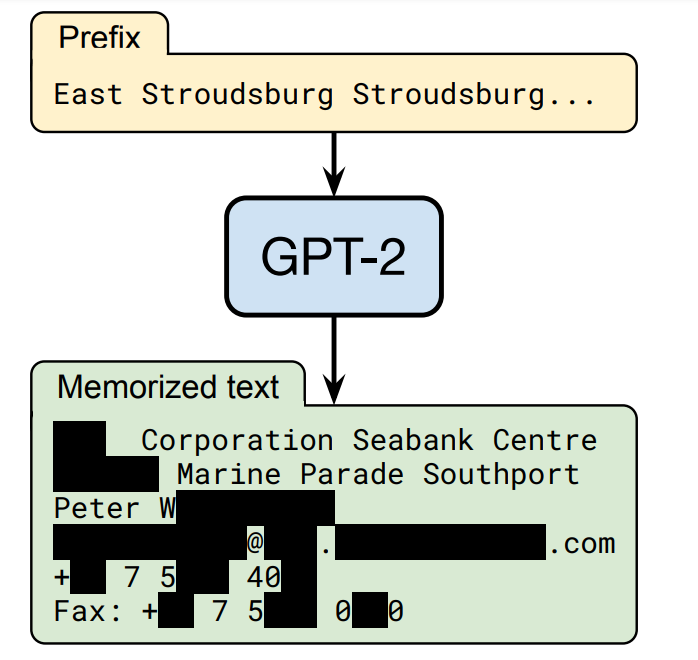
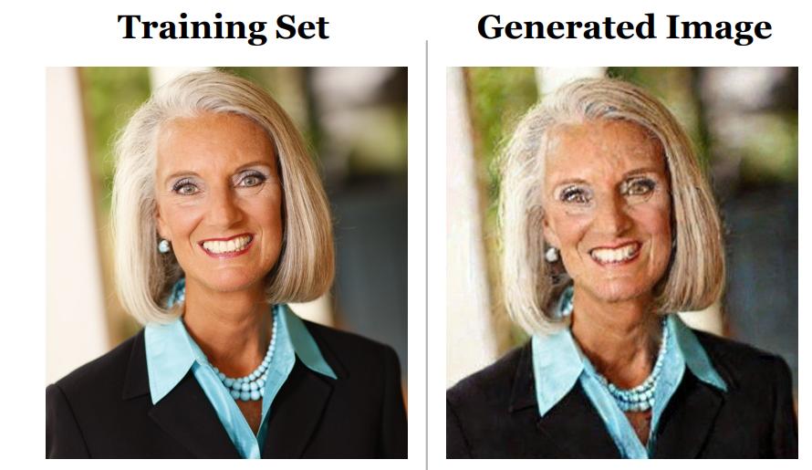
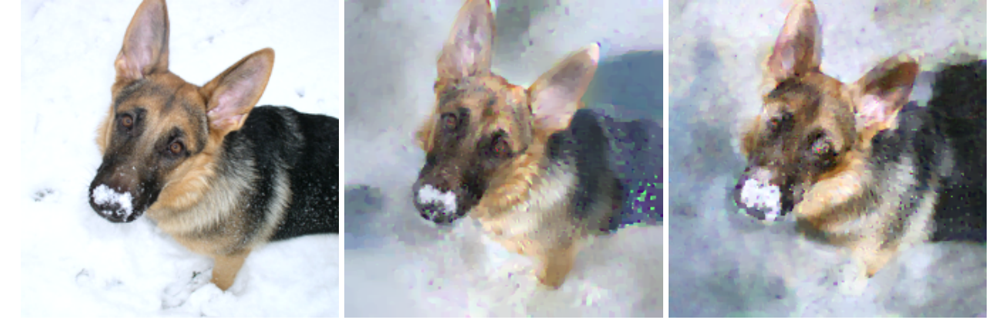
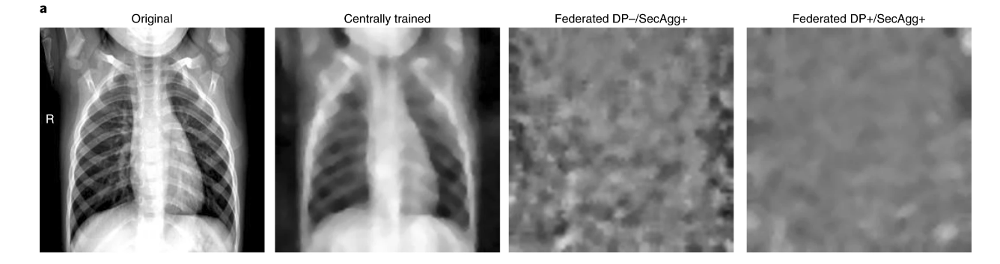

Pokud natrénujeme neuronovou síť na určitém datasetu, je často
možné tato data rekonstruovat z parametrů natrénovaného
modelu. V otázce 9
jsme se zabývali metodou federativního učení s využitím
secure aggregation, která by měla chránit data uživatelů, ze
kterých se model trénoval. Ani federativní učení samo
o sobě nám ale nezaručí, že data nebude možné
rekonstruovat. Na obrázcích níže můžete vidět postupně zleva
ukázky z citovaných studií: extrakce osobních údajů
z jazykového modelu GPT-2, vygenerování téměř identického
obrázku obličeje jako v trénovacích datech při použití
Stable Diffusion a rekonstrukce obrázku psa
z trénovacích dat i přes použití federativního
učení.



Jedním ze způsobů, jak chránit soukromí trénovacích dat, je
použití konceptu diferenciálního soukromí (differential
privacy, DP). Při trénování neuronové sítě se přidává náhodný
šum k trénovacím datům nebo k modelu tak, aby nebylo
možné zjistit informace o konkrétní položce
v původním datasetu. Na obrázku níže můžete vidět pokus
o rekonstrukci původního rentgenového snímku plic
pacienta pomocí gradient útoku při použití centrálně
trénovaného modelu, federativního modelu se secure aggregation
a federativního modelu se secure aggregation a s
použitím diferenciálního soukromí.

Pro lepší pochopení tohoto konceptu slouží následující
příklad: Představme si, že provádíme volební průzkum na vzorku
n = 1000 respondentů a chceme zjistit, jaká část
z nich zamýšlí volit kandidáta X v nadcházejících
volbách. Vzhledem k citlivosti dotazu se obáváme, že
někteří lidé nebudou odpovídat po pravdě. Rozhodneme se proto
použít jednoduchý mechanismus zaručující tzv. lokální
diferenciální soukromí, který lze popsat následovně: Každý
respondent provede v soukromí následující postup, jehož
výsledky nikdo jiný nevidí: Hodí si poprvé mincí (fair mince,
pravděpodobnost panny i orla je 1/2). Pokud padne panna,
respondent odpoví podle své skutečné preference: „Ano“ (volím
kandidáta X), pokud jej skutečně volí. „Ne“ (nevolím kandidáta
X), pokud jej skutečně nevolí. Pokud padne orel, respondent si
hodí podruhé mincí: Padne-li panna, respondent odpoví „Ano“,
bez ohledu na svou skutečnou preferenci. Padne-li orel,
respondent odpoví „Ne“, opět bez ohledu na svou skutečnou
preferenci. Tento postup zajišťuje, že tazatel neví, zda
odpověď „Ano“ či „Ne“ pochází z upřímné odpovědi, nebo
z druhého, náhodného hodu. Předpokládejte, že jste
použili tento experiment a zeptali jste se n = 1000
lidí a ti vám odpovídali upřímně a dle pravidel
experimentu. Dostali jste celkem 600 odpovědí „ANO“ a 400
odpovědí „NE“. Která z následujících tvrzení jsou
pravdivá na základě vašeho průzkumu?